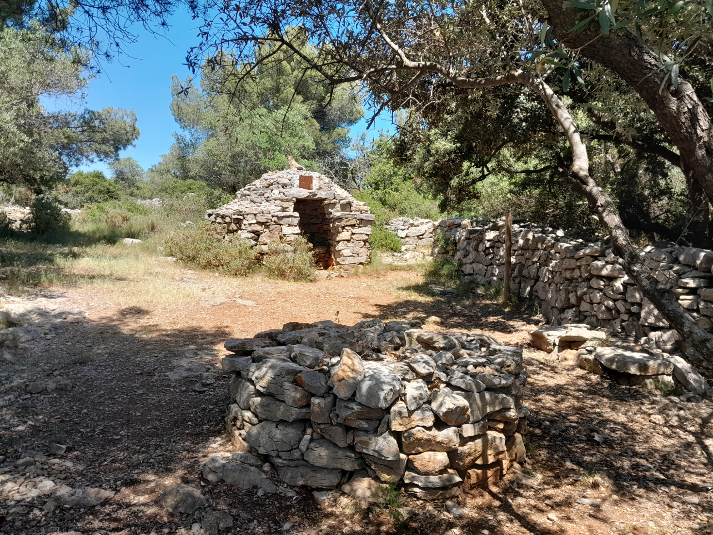
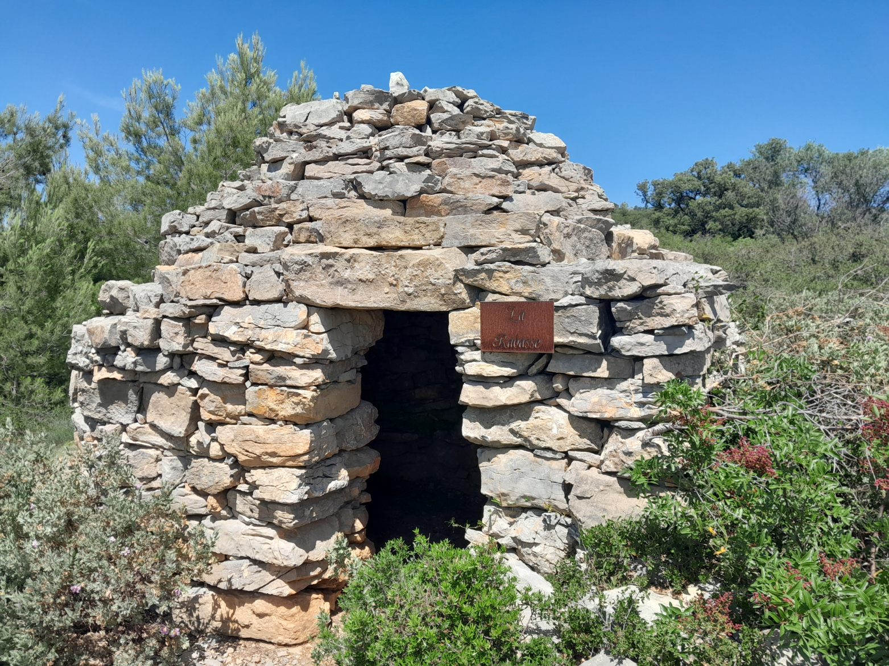
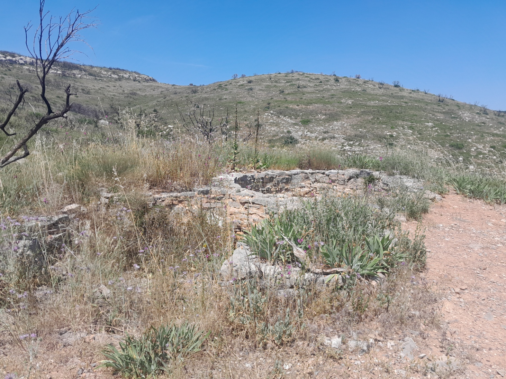
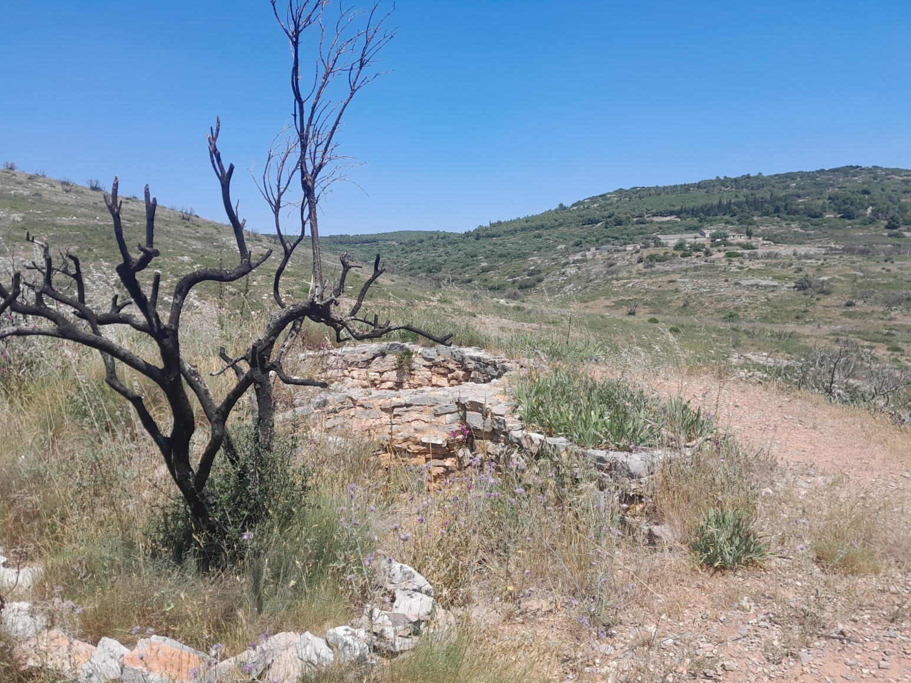
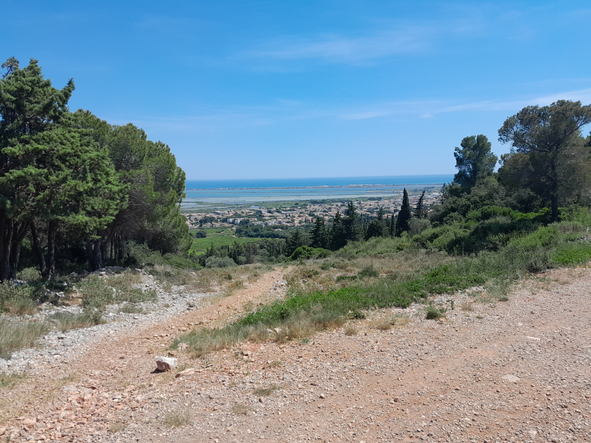
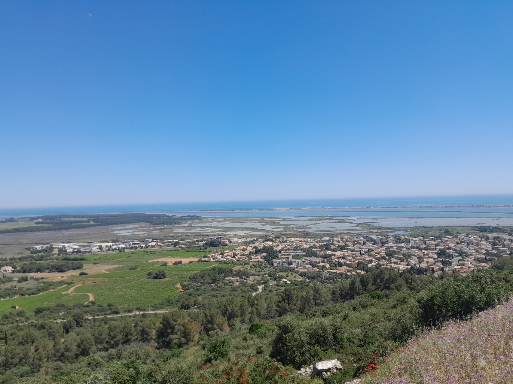

Le chemin des capitelles
Le massif de la Gardiole, situé entre Montpellier et Sète, est un espace naturel protégé classé « site pittoresque » et reconnu ZNIEFF. Cette chaîne calcaire culminant à 234 mètres et s’étendant sur 18 kilomètres de long et 4 kilomètres de large, offre de superbes panoramas sur les étangs de Thau et d’Ingril, les vignobles de Frontignan ainsi que sur la Méditerranée. Ce massif abrite plus de 700 espèces végétales et plus de 120 espèces d’oiseaux et de reptiles. Cette randonnée facile, accessible aux familles, vous fera découvrir plusieurs lieux culturels cachés au riche passé historique : four à chaux, vignobles et pas moins de cinq capitelles. Cet itinéraire aux paysages variés garrigue, vallées et cols ainsi qu’aux splendides panoramas, est idéal pour les randonneurs souhaitant découvrir la nature et le patrimoine du massif de la Gardiole et de Frontignan.
Dernière vérification du parcours :
Départ:
Frotignan (Halle des Sports Nikola Karabatic)
Informations
Type : familiale, boucle
Type de patrique : marche, trail
Sens conseillé : horaire
Difficulté: 2/5
Technicité : 2/5
Accessible aux animaux de compagnie : oui (en laisse)
Accessible aux fauteuils roulants : non
Précautions
Cette randonnée ne suit pas de balisage. Il est conseillé de télécharger la trace GPX disponible sur cette page afin de pouvoir suivre l’itinéraire à l’aide d’un GPS si nécessaire. Cet espace étant un site naturel protégé, veillez à respecter la faune et la flore afin de préserver ce lieu exceptionnel. Si vous réalisez cette randonnée avec des animaux de compagnie, il est recommandé de les tenir en laisse afin de préserver la biodiversité du massif. Certaines zones peuvent également être concernées par des activités de chasse, généralement entre septembre et février. Pensez à vous renseigner au préalable et, dans la mesure du possible, à éviter ces secteurs les jours de chasse ou à prendre toutes les précautions nécessaires.
Pour voir les périodes de chasse en Occitanie : chasse-nature-occitanie.fr
Matérielles
Il est recommandé de porter des chaussures de marche adaptées et de prévoir une réserve d’eau suffisante.
Etape 1
Au point de départ, prenez le chemin de gauche à l’intersection afin d’entamer une montée sur une douce pente goudronnée. Prenez ensuite à gauche en suivant la trace GPX, puis réalisez la petite boucle dans le sens horaire. Vous pourrez alors emprunter une variante permettant de découvrir un ancien four à chaux.
Poursuivez votre itinéraire, vous pourrez alors apercevoir sur votre chemin une première capitelle, dissimulée dans les broussailles et située en hauteur : la capitelle du Cros. Vous pourrez la rejoindre en empruntant un petit sentier dérobé montant jusqu’à celle-ci. Continuez ensuite votre route jusqu’à apercevoir une croix ainsi qu’un panneau indicatif signalant l’emplacement d’un hameau de capitelles. Il s’agit de votre prochaine destination. En suivant le chemin, vous pourrez découvrir plusieurs capitelles, à commencer par la capitelle Fer à Cheval (Marcel). Suivez ensuite la trace GPX afin d’emprunter un petit sentier menant directement vers le hameau. Vous pourrez alors apercevoir la capitelle de l’Olivier d’Yvette, puis plusieurs autres capitelles : la capitelle de la Brasoucade, la capitelle de la Rabasse (accessible en quittant légèrement la trace principale) ainsi que, un peu plus loin, la capitelle des Garrigaires.
Après avoir découvert la dernière capitelle, continuez à suivre la trace GPX. Vous arriverez alors dans un magnifique endroit ombragé, idéal pour faire une pause. Prenez ensuite le chemin de gauche afin de monter jusqu’au col reliant le Pioch Madame et le Pioch Michel.


Variante : Cette variante, sans réelle difficulté ni rallongement significatif, vous fera découvrir un ancien four à chaux. Suivez la trace GPX afin d’emprunter un sentier escarpé menant jusqu’au four. Celui-ci a été découvert caché sous les broussailles et partiellement enterré. En 2007, un chantier de restauration a été entrepris : des bénévoles ont alors décaissé le terrain afin de dégager l’entrée du four ainsi que sa base. Selon son état de conservation, ce four à chaux daterait au plus tard du XIXe siècle. Un second four était généralement construit à proximité du premier afin de pallier un éventuel effondrement, mais aucune autre structure de ce type n’a encore été retrouvée aux alentours.


Etape 2
Une fois la montée terminée, prenez à droite afin de vous diriger vers le Pioch Michel. Vous devrez faire le tour de sa partie sud en suivant toujours la trace GPX. Vous pourrez alors profiter de splendides panoramas sur les étangs et la Méditerranée. Redescendez ensuite jusqu’à la Halle des Sports Nikola Karabatic, point d’arrivée de cet itinéraire.

